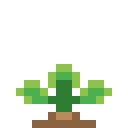
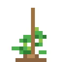
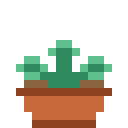
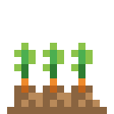
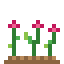

2 · OPENING CUTSCENE
Seven taps from name to Level 1
Replaces both the name screen and today's five-beat cutscene. Every beat waits for a tap (Next ▸), and Skip stays top left. The radish drift is kept from the current cutscene because it spoils no level.
FENNEL
Ah, a visitor! I'm Fennel. What's your name?
LucyEnter ▸








FENNEL
Welcome, Lucy! This is my garden. Not much growing yet.
Next ▸Ask me anything!
Happy to help ♥
FENNEL
These are my helpers. They're AI, like ChatGPT with fur.
Next ▸FENNEL
Tonight I'm making stew. Grow me veg and herbs for the pot, and flowers for the table.
Next ▸DRIFTRadishes are ready in a month!Radishes take a whole YEAR!
FENNEL
They mean well. But sometimes they're wrong, and still sound sure.
Next ▸
Almanac
FENNEL
So here: my almanac. Forty years of notes. It's always right.
Next ▸TRUST,
BUT CHECK.
The helpers are friendly, not always right. Fennel's almanac is.
Start Level 1 ▸↻ Replay